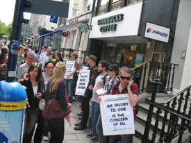
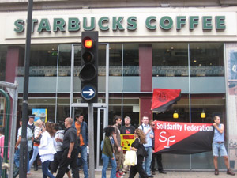
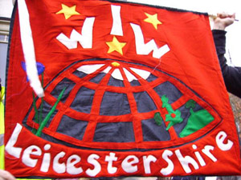

Submitted on Fri, 07/11/2008 - 2:47am

Originally posted at anarkismo.net
Dublin Report:
From 12 pm a small group of us decided to leaflet inside some of the
other Dublin Starbucks preliminary to the main demonstration on the one
in Dame Street. We started upstairs in BT2 Grafton Street – some
leaflets were got into the hands of staff behind the bar – but a BT2
security guard is hot on our heels snaffling and crumpling paper as he
goes. No security or management presense at all in Dawson street where
we get a more leisurely stroll and distribute a good number of leaflets
– staff and customers read with interest. Similarly in a fairly
deserted Starbucks in the IFSC.
Finally we get back to Dame Street and do another quick run around
inside. A minute later we are greeted by Irene; district manager of
Starbuck’s Dublin. She is icely and formally polite informing us that
we are welcome to protest peacefully but not to leaflet inside the
premises and to check in any time for refreshments . We decline the
offer. Then she turns paranoid asking us if we are recording her
(though we have neither the equipment or the inclination!)– turns back
in and is not seen again.
The crowd in Dame Street quickly swells to over 30: with WSM members
and many other activists; mostly but not exclusively libertarian. The
atmosphere is cheerful through out and people manage to engage with
workers on several occasions. Encouraged we head back to Dawson Street
and again up to 30 people throng around it; a very strong presense at a
quite small entrance.
Submitted on Fri, 07/11/2008 - 1:59am
Originally published at indymedia.org.uk.
On Thursday 24th April, Monica, a barista in the central Seville branch
of Starbucks, was fired without notice for creating problems with her
workmates. She had worked there for a year and a half. She had been
active in organising with the CNT and defending her rights. The store
manager told her on several occasions that she must have nothing to do
with unions. She is a member of the Commerce Union of the CNT, in
Spain. The CNT is demanding her reinstatement.
Barely
a month later, in Grand Rapids, Michigan, USA, Starbucks fired barista
Cole Dorsey on June 6th. Cole had over 2 years of service and was
active in the IWW Starbucks Workers Union. The National Labor Relations
Board in the US has already made the firm rehire two sacked workers in
2006, and are looking at Starbucks latest violation.
Submitted on Sat, 07/05/2008 - 2:04pm
As part of the Global Day of Action against Starbucks called by the
AIT/IWA and IWW Organise! and the WSM picketed Starbucks in Belfast
today (5th July) to demand the reinstatement of Monica, a member of the
anarcho-syndicalist member working in their central Seville outlet, and
Cole Dorsey, an IWW member who was fired by Starbucks for organising in
their Grand Rapids, Michican, shop.
Organise! and the WSM picketed Starbucks in Belfast city centre today
from 12 to 1 pm. Despite the miserable weather around 12 people joined
the picket and leafleted passers by and potential customers outside the
coffee shop. At the start of the picket 3 people had gone inside to
leaflet customers and staff. There was a very positive response to the
picket however one person was falsely accused of assaulting a
Starbuck's member of staff after leafleting staff and customers inside.
While Starbucks present themselves as a trendy, ethical corporation
when it comes to their own workers they are ruthless union-busters
determined to stop their employees organising. Monica was fired on the
24th of April without notice. She had worked in the central Seville
branch of Starbucks for a year and a half when her manager suddenly
claimed she "created problems with her workmates". She had resistged
management when they made people work public holidays without extra
pay. She refused to attend work meetings outside working hours where no
pay or time in lieu was offered. Her sacking came after she asked about
another worker who had ben fired. The store manager had told her on
several occasions that she must have nothing to do with unions.
Barely a month later, in Grand Rapids, Michican, USA, Starbucks fired
Cole Dorsey on June 6th. Cole had over two years of service and was
active in the IWW Starbucks Workers Union.
Originally posted here
Submitted on Wed, 03/26/2008 - 2:29pm
Finally on 17 March, staff receive an email from Head of Adult Skills and Learning, Chris Minter, who is “pleased to announce” certain details of the privatisation of Leicester Adult Education College.
Minter tells us that this is “an exciting new opportunity to diversify the use of the college's facilities and income streams and will provide an excellent resource that fits well with our strategic priorities around employability.” In this new multi-agency initiative, Highcross Development Employment Hub is IN, Art and Design is OUT! Art and Design staff will be moved to inappropriate accommodation, some of these workers may well lose their jobs. So, non-vocational education gets the boot, while the kind of jobs training and advice which can be placed literally anywhere in the city gets prime position at the college.
Submitted on Wed, 03/26/2008 - 2:22pm
You don’t need to be
Sherlock Holmes to figure out that something rotten is going on at Leicester Adult Education College.
With job losses; staff being re-located; skilled people disappearing;
restructuring, with staff having to do more than one job; people who’ve left not
being replaced� it all adds up to one thing - Leicester Adult Education College
is being set up to fail.
The Incredible Shrinking
College
We’ve seen courses being
streamlined, other courses disappearing.
We’ve already seen the closure and privatisation of the Creative Writing School.
The Art
Department is visibly
shrinking with the loss of one of its three rooms, and now the loss of yet
another.
Saatchi & Saatchi, it
isn’t!